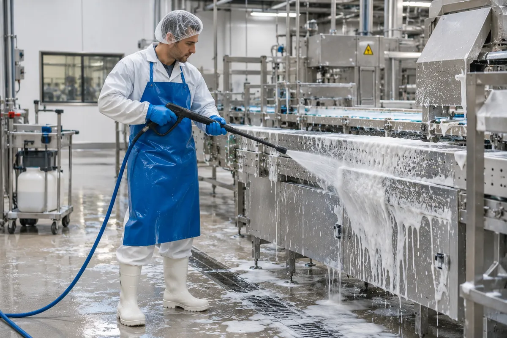

Sector · Voeding
Schoonmaak voor voeding.
In de voedingsindustrie hoort de schoonmaak bij je voedselveiligheid. V CLEAN voert ze uit volgens je reinigingsplan en je HACCP-procedures.

Wat we vaak horen
Je uitdagingen
Hygiëne als wettelijke plicht
Voedingsbedrijven werken met een autocontrolesysteem op basis van HACCP, onder toezicht van het FAVV.
Reinigen tussen productieruns
De tijd is beperkt en de lijn moet daarna weer veilig kunnen opstarten.
Correct werken met producten
Schuim, desinfectie en spoelen in de juiste volgorde, met de juiste middelen.
Onze aanpak
- Werken volgens je reinigings- en desinfectieplan (HACCP)
- Schuim- en hogedrukreiniging van lijnen en ruimtes
- Hygiëne- en kledijregels van je site vooraf aangeleerd
- Registratie van wat, wanneer en door wie, ter ondersteuning van je audits
- Kwaliteitsrapport met foto's na elke interventie
Zo starten we
- Intake van 5 minuten Online, zonder verplichtingen.
- Plaatsbezoek Je aanspreekpunt ([IN TE VULLEN: naam aanspreekpunt]) bekijkt de site.
- Voorstel op maat Een duidelijke offerte voor de opdracht.
- Start Je vaste V CLEAN-ploeg begint, ingewerkt op je regels.
Certificaten & verzekering: [IN TE VULLEN: HACCP-opleiding van de ploeg] · Verzekering BA: [IN TE VULLEN]
Vertel ons over je locatie.
We bekijken wat er moet gebeuren en bezorgen je een voorstel op maat.